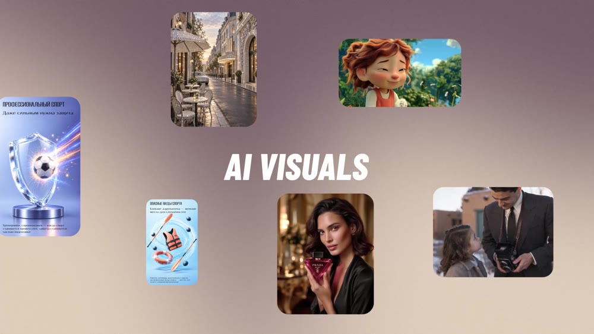
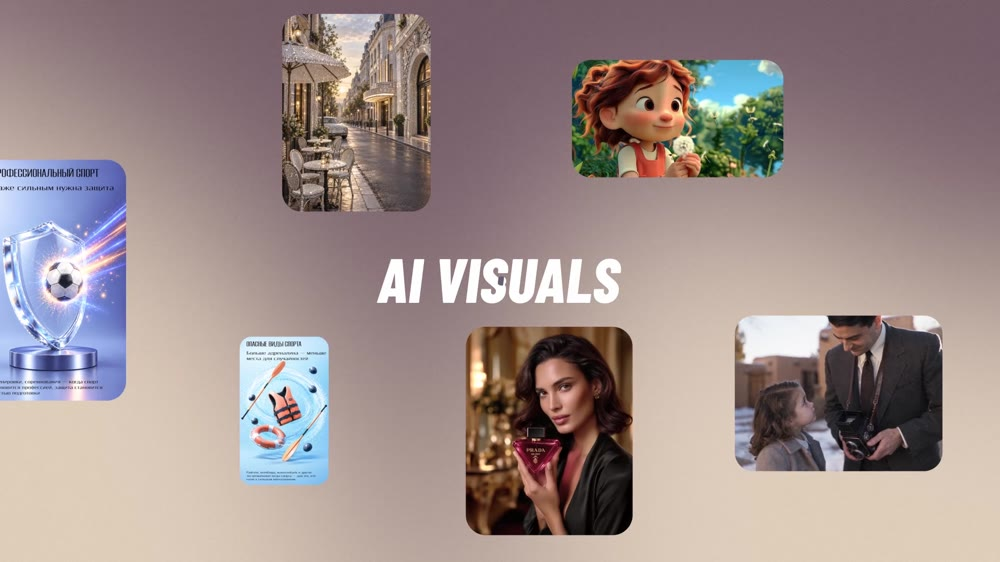
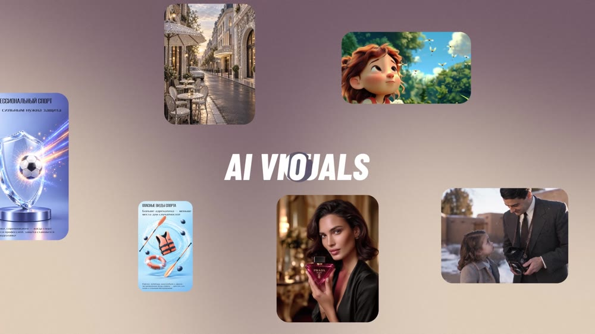
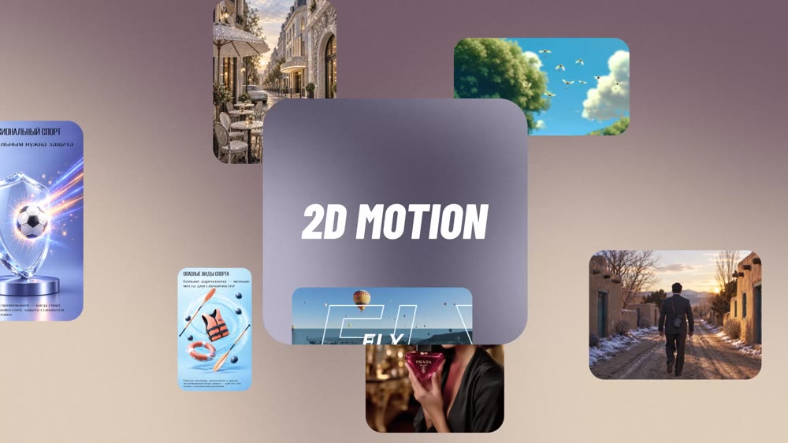

Олеся
2D/3D Motion / AI
Направления
Проекты
Обо мне
Обсудить проект ↗
← Все направления
/
AI Visuals
AI Visuals




← Все направления
Избранные проекты ↗
 Олеся2D/3D Motion / AIОбсудить проект ↗Олеся2D/3D Motion / AIОбсудить проект ↗
Олеся2D/3D Motion / AIОбсудить проект ↗Олеся2D/3D Motion / AIОбсудить проект ↗